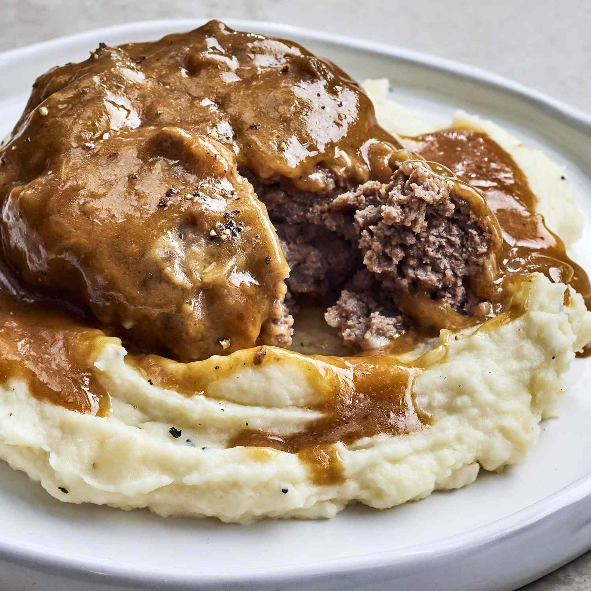

This Salisbury Steak recipe comes together quickly and does not need a lot of time in the slow cooker. It's a delicious way to add flavor to ground beef and the children love it! The gravy is delightful served over mashed potatoes.
Ingredients
- 2 pounds lean ground beef
- ½ cup italian seasoned bread crumbs
- ¼ cup of milk
- 1 (1 ounce) envelope dry onion soup mix
- ¼ cup all-purpose flour
- 2 tablespoons vegetable oil
- 2(10.5 ounce) cans condensed cream of chicken soup
- ¾ cup of water
- 1(1 ounce) packet dry au jus mix
Procedure
- Step 1
Combine ground beef, bread crumbs, milk and onion soup mix together in a large bowl until well combined; shape into 8 patties. - Step 2
Heat oil in a large skillet over medium high heat. Dredge patties in flour just to coat and quickly brown on both sides in the hot skillet. Place browned patties into the slow cooker stacking alternately like a pyramid. - Step 3
Mix condensed soup, water and au jus mix together in a medium bowl; pour over the beef patties. Cook on low until ground beef is well done, about 4 to 5 hours.